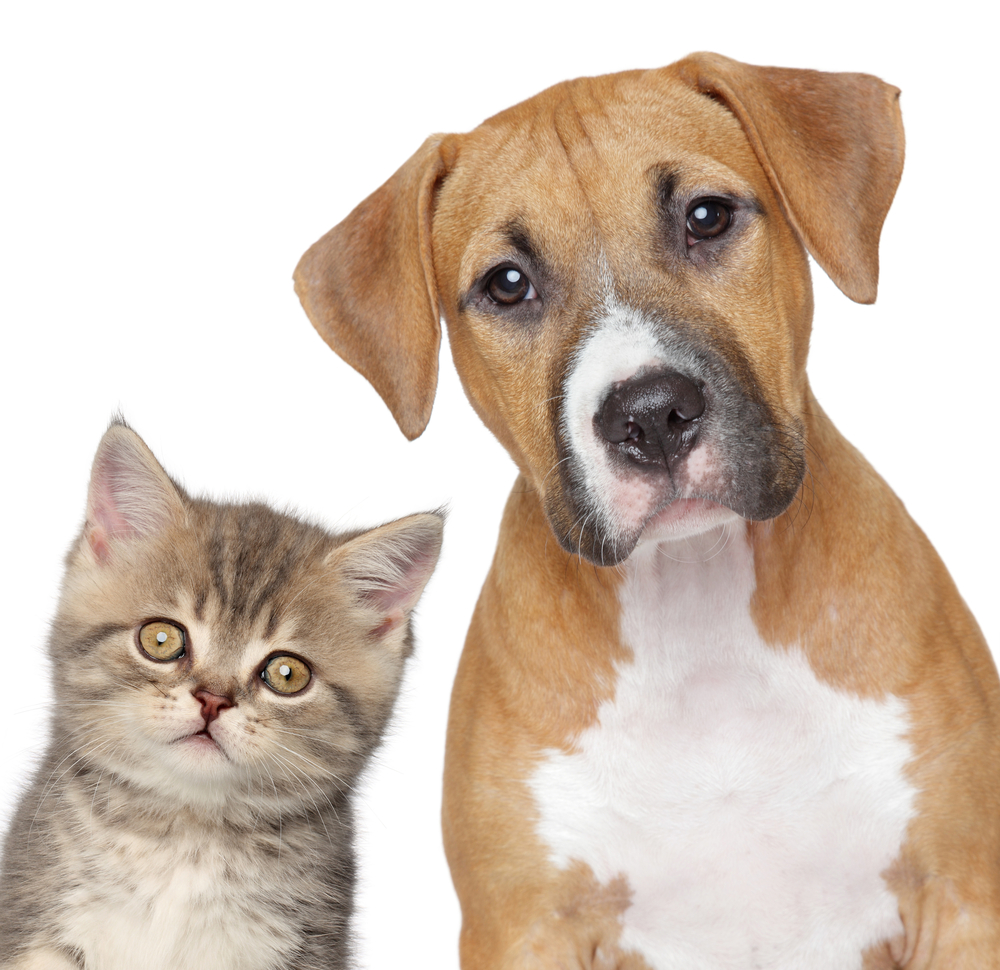

Adopciones
Contamos con el servicio profesional voluntario, que se encarga de hacer cumplir el protocolo que la Fundación exige para la adopción de caninos y felinos.
Adopciones
Contamos con el servicio profesional voluntario, que se encarga de hacer cumplir el protocolo que la Fundación exige para la adopción de caninos y felinos.Consulta
Todos los días de la semana incluyendo, Sábados, Domingos y Festivos. Sin costo, por el beneficio de peludos desprotegidos.